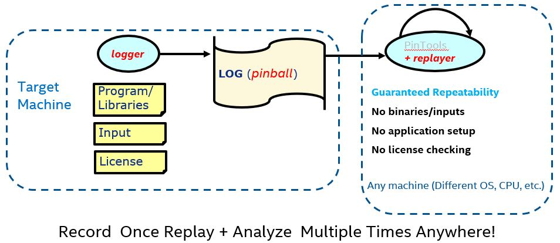

Record and Replay
Intel® SDE provides a tracing component that enables recording of workload execution flow, and replaying this recording. Intel® SDE tracing based in the PinPlay technology which was presented in multiple conferences (e.g. CGO-2010). It is capturing the execution of a program as a set of files, called a pinball, which can be are used to replay the same execution deterministically.
Conceptually, there are two phases: capturing (also known as logging) and replaying. In the capturing phase, the program binary is executed with the desired input, in the program native environment or by using Intel® SDE emulation. PinPlay, which uses binary instrumentation, runs above the OS and observes the execution using Intel® Pin’s API, and collects the required information to replay it. Intel® SDE PinPlay supports recording of multi-threaded workloads and replay the execution deterministically, preserving the relative order between the threads.
The logs, collectively called pinballs, contain all the information necessary to run the application, without the original binary or input. In the replay phase, PinPlay uses the pinballs previously collected and repeats the same execution exactly (each instruction sees the exact same input as they saw in the capturing run). Furthermore, Intel® SDE can activate any analysis tool while replaying the pinball. This guarantees that any analysis is performed at the same execution flow without the natural run to run variation.
Since Intel® SDE PinPlay only replays user-level code, one can capture an execution of a Windows application, running on Windows operating system and replay it on Linux.
{kind=link}
Terminology
Pinball - A collection of files that represent a single execution flow captured by PinPlay
Logger - Intel® SDE PinPlay component that record the execution flow
Replayer - Intel® SDE PinPlay component that replay pinballs
Log - Capturing the application’s flow and generating pinball
Replay - Replaying the application’s flow that was captured in a pinball
Relog - Capturing the execution flow for replay of a pinball
Injection - Metadata emitted to guarantee deterministic replay
Tracing Additional information